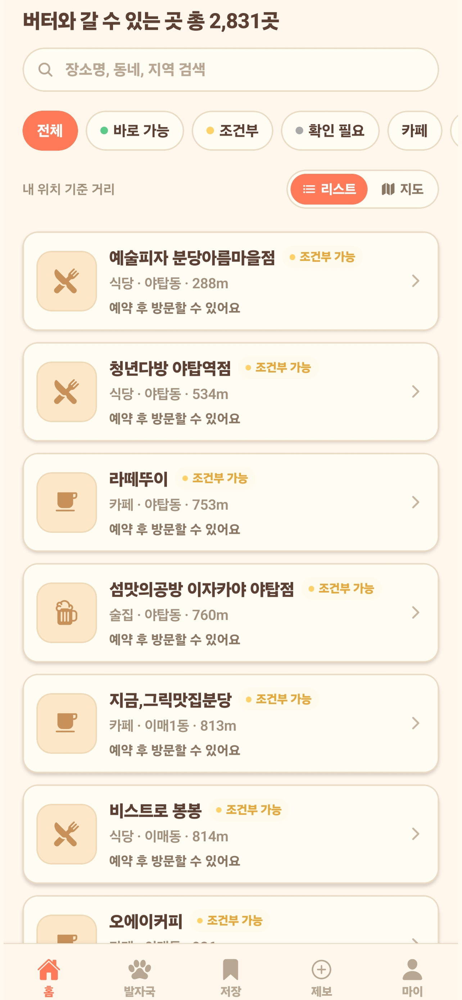
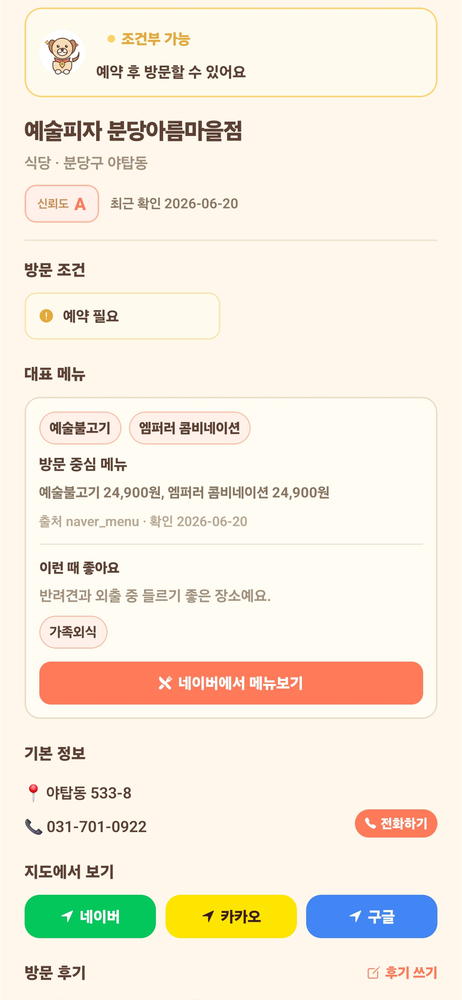
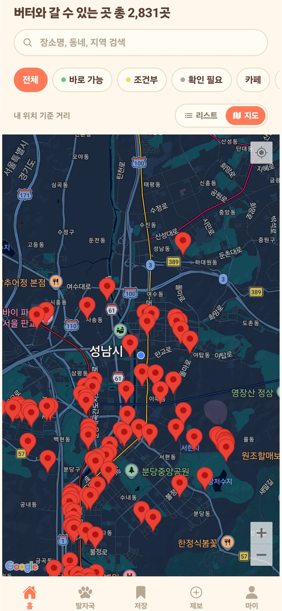

1. 사업 요약
노드랩스는 검증형 장소 데이터와 AI 자동화를 기반으로 반려견 동반 생활의 불편을 줄이고, 이후 같은 기술 구조를 회계·모임·운동 영역으로 확장합니다.
사업 구조
주력 사업: 개치테이블
공통 기술 기반 확장: 기장비서AI, 골프총무AI비서, 운동레벨업
예비 포트폴리오: 블랙마켓
문제
반려견 동반 장소 정보는 지도, 블로그, SNS, 커뮤니티에 흩어져 있고 실내/테라스/대형견/리드줄/예약 등 방문 전 필요한 조건이 구조화되어 있지 않습니다.
해결
개치테이블은 동반 가능 여부뿐 아니라 방문 조건을 필드화하고, unknown 항목은 임의로 채우지 않는 검증형 데이터 운영으로 신뢰도를 높입니다.
사업화
분당구 MVP로 데이터·UX·제보 흐름을 검증한 뒤, 지역 광고/사업장 관리/예약·쿠폰 제휴를 1차 수익모델로 실험합니다.
2. 노드랩스가 믿을 만한 이유
단순 아이디어가 아니라, 여러 모바일 앱을 직접 기획·개발·빌드하며 축적한 공통 기술 자산과 실행 경험을 기반으로 합니다.
개발 역량
Expo/React Native, TypeScript, Supabase 기반으로 iOS·Android·Web 대응 모바일 서비스를 직접 개발합니다.
AI/자동화 역량
AI Agent, OCR, 자연어 입력, 데이터 정제, 추천/요약 기능을 서비스 목적에 맞게 연결합니다.
운영 자산
개치테이블은 누적 5,700개 이상의 장소 등록/수집 자료와 앱 빌드·스토어용 화면 자산을 보유합니다.
확장 포트폴리오
기장비서AI, 골프총무AI비서, 운동레벨업 등 반복 업무 절감형 서비스로 공통 기술을 확장할 수 있습니다.
| 역량/자산 | 내용 | 정부지원사업 관점의 의미 |
|---|---|---|
| 모바일 앱 개발 | Expo/React Native 기반 다수 서비스 개발 | 지원금 투입 후 빠른 MVP 개선과 배포 가능 |
| 데이터 운영 | 개치테이블 5,700+ 등록/수집 자료, 검수 필요 필드 구분 | 아이디어가 아닌 실체 있는 초기 데이터 자산 보유 |
| AI 기능 | OCR, 자연어 처리, 추천/요약, 검수 보조 자동화 | 단순 디렉토리 앱을 넘어 AI 고도화 가능 |
| 지식재산 | 블랙마켓 특허 진행중. 단, 본문에서는 예비 포트폴리오로 제한 | 기술/IP 기획 경험은 있으나 본 사업 초점과 분리 |
3. 주력 사업: 개치테이블
개치테이블은 반려견과 함께 갈 수 있는 식당·카페를 찾는 사용자의 반복 검색, 전화 확인, 방문 실패 문제를 줄이는 위치 기반 생활 서비스입니다.
핵심 제품 정의
반려견 동반 가능 장소를 지도와 리스트로 제공하고, 실내/테라스/대형견/캐리어/리드줄/주차/예약 등 방문 전 필요한 조건을 구조화합니다. 확인되지 않은 정보는 “확인 필요”로 유지하여 신뢰를 해치지 않습니다.
초기 검증 전략
전국 데이터를 모두 노출하기보다 분당구 MVP부터 검수 밀도를 높입니다. 사용자의 상세 조회, 길찾기, 즐겨찾기, 제보, 사업장 수정 요청을 지표로 삼아 수도권 확장 여부를 판단합니다.



4. 확장 포트폴리오
4개 사업을 동일 비중으로 나열하지 않고, 개치테이블 검증 후 공통 기술을 확장 적용할 후보군으로 정리합니다.
| 구분 | 서비스 | 현재 포지션 | 1차 수익모델 |
|---|---|---|---|
| 주력 사업 | 개치테이블 | 5,700+ 데이터 기반 분당구 MVP 검증 | 지역 광고, 사업장 프리미엄 노출/관리, 예약·쿠폰 제휴 |
| 확장 1 | 기장비서AI | AI 기장·세무 업무 자동화 앱 | 월 구독형 SaaS, 세무사·사업자 협업 모델 |
| 확장 2 | 골프총무AI비서 | 골프 모임 일정·정산·공지 자동화 | 모임 단위 구독, 프리미엄 정산 기능 |
| 확장 3 | 운동레벨업 | 센서 자동 카운팅·레벨업 기반 운동 습관 앱 | B2C 구독, 챌린지/아이템형 프리미엄 |
| 예비 | 블랙마켓 | 출시 전·특허 진행중 | 본 지원사업 문서에서는 상세 수익모델 제외 |
5. 시장성 및 경쟁 서비스 대비 차별점
반려동물 시장
국내 반려동물 양육 가구는 500만 가구 이상으로 추산되며, 반려견 동반 외식·카페·여행 수요가 커지고 있습니다.
※ 최종 제출본에서는 농림축산식품부·KB경영연구소 등 최신 공개 통계 수치로 출처 표기 권장
정보 공백
네이버 지도/카카오맵은 장소 검색에는 강하지만, 반려견 동반 세부 조건을 표준화된 필드로 충분히 제공하지 못합니다.
지역 수익화
분당구처럼 반려견 동반 소비가 있는 지역에서 사업장 광고, 프로필 관리, 쿠폰·예약 제휴로 실험할 수 있습니다.
| 비교 대상 | 한계 | 개치테이블 차별점 |
|---|---|---|
| 네이버 지도 / 카카오맵 | 일반 장소 검색 중심. 반려견 세부 조건 필드가 제한적 | 실내/테라스/대형견/캐리어/주차/예약 등 방문 조건 구조화 |
| 블로그 / 인스타그램 | 후기 검색은 가능하지만 최신성·정확성·비교성이 낮음 | 장소별 동일 필드, 최신 확인일, 제보/검수 흐름 제공 |
| 반려생활 등 콘텐츠형 서비스 | 콘텐츠·여행 큐레이션 중심 | 지역 생활권 내 즉시 방문 가능한 식당/카페 탐색에 집중 |
| 지역 카페 / 커뮤니티 | 정보가 흩어져 있고 검색·정렬·지도화가 어려움 | 지도/리스트/상세 조건/사용자 제보를 앱 안에서 연결 |
6. 현재 성과 및 진척도
| 서비스 | 현재 단계 | 완료/보유한 것 | 다음 단계 | 검증 지표 |
|---|---|---|---|---|
| 개치테이블 | MVP/데이터 검수 | 5,700+ 장소 자료, 앱 화면/빌드 자산, 지도/리스트/상세 구조 | 분당구 검수, 제보/사업장 수정 요청, 관리자 승인 플로우 | 검증 완료 장소 수, 상세 조회, 길찾기, 즐겨찾기, 제보 수 |
| 기장비서AI | 확장 포트폴리오 | AI 입력/OCR/재무 정리 방향의 제품 기획 및 앱 개발 기반 | 세무 보조 범위 명확화, 테스트 사업자 확보 | 입력 시간 절감률, OCR 정확도, 구독 전환율 |
| 골프총무AI비서 | 확장 포트폴리오 | 모임 일정/정산/공지 자동화 제품 방향 | 총무 페르소나 테스트, 정산 기능 MVP | 모임 생성 수, 정산 완료율, 반복 사용률 |
| 운동레벨업 | 확장 포트폴리오 | 센서 카운팅/레벨업 기반 습관화 컨셉 | 운동 카운팅 정확도 개선, 챌린지 기능 검증 | D1/D7 유지율, 운동 완료 수, 레벨업 전환 |
| 블랙마켓 | 예비 포트폴리오 | 특허 진행중, 출시 전 준비 단계 | 본 사업과 분리해 별도 문서화 | 본 지원사업 KPI에서 제외 |
7. 6개월 / 12개월 로드맵
분당구 데이터 검수 및 MVP 안정화
핵심 장소 데이터 정제, 지도/리스트/상세 UX 안정화, “방문 전 확인 필요” 정책 문구 정비, 사용자 제보 흐름 설계
베타 사용자 확보 및 사업장 수정 요청 기능
분당구/판교 초기 사용자 모집, 제보/수정 요청/관리자 승인 플로우 운영, unknown 필드 감소 실험
성남·판교·수도권 확장 및 광고/제휴 테스트
검증된 운영 기준을 수도권 주요 생활권으로 확장하고, 지역 광고·프리미엄 노출·쿠폰 제휴를 소규모로 실험
전국 주요 지역 확장 및 B2B 상품화
전국 주요 상권 데이터 품질 관리, 사업장 관리 상품화, 공통 기술을 기장비서AI/골프총무AI/운동레벨업에 확장 적용
8. 목표 KPI
데이터 KPI
- 분당구 검증 완료 장소 수
- unknown 필드 감소율
- 사용자 제보 처리율
- 사업장 수정 요청 처리 수
사용자 KPI
- 월간 활성 사용자 MAU
- 장소 상세 조회 수
- 즐겨찾기/길찾기 클릭 수
- 재방문율 및 지역별 검색 수
사업화 KPI
- 사업장 광고/제휴 문의 수
- 프리미엄 노출 테스트 전환율
- 예약·쿠폰 제휴 후보 수
- 기장비서AI 등 확장 서비스 테스트 계정 수
9. 지원금 활용 계획
| 항목 | 활용 내용 | 예상 산출물 |
|---|---|---|
| 개발비 | MVP 기능 개발, 관리자 검수 시스템, 사업장 수정 요청 기능, 지도/상세 UX 개선 | 개치테이블 베타 앱, 관리자 검수 플로우 |
| 데이터비 | 장소 데이터 검증, 전화 확인, 사용자 제보 검수, 데이터 정제 자동화 | 분당구 검증 데이터셋, unknown 감소 리포트 |
| AI 고도화 | 리뷰/정책 요약, 장소 추천, 중복/오류 검수 보조 AI 기능 | AI 추천/요약 프로토타입 |
| 마케팅비 | 분당구 초기 사용자 모집, 사업장 제휴 테스트, 지역 커뮤니티 홍보 | 베타 사용자, 제휴 후보 사업장 |
| 운영/인프라 | 서버, 지도 API, AI API, Supabase, 로그/분석 도구 | 안정적 서비스 운영 환경 |
| 법무/정책 | 개인정보처리방침, 이용약관, 위치정보/사업장 정보 처리 기준, 결제/환불 정책 | 제출/운영 가능한 정책 문서 |
10. 리스크 및 대응
데이터 정확성
매장 정책 변경 가능성이 있으므로 최신 확인일, 출처, 방문 전 확인 문구를 표시하고 제보/검수 체계를 운영합니다.
위치·개인정보
위치정보, 계정 정보, 제보 데이터는 최소 수집 원칙과 삭제/정정 요청 절차를 반영합니다.
AI 결과 오류
AI 추천/요약은 보조 정보로 제공하고, 최종 방문 판단은 사용자 확인을 전제로 합니다.
데이터 출처/저작권
공개 정보 기반 사실 데이터와 사용자 제보 중심으로 운영하고, 저작물성 콘텐츠의 무단 복제를 피합니다.
세무/회계 한계
기장비서AI는 AI 보조 도구로 포지셔닝하고, 전문 세무 판단이 필요한 영역은 세무사 검토/사용자 확인 절차를 둡니다.
결제/구독
프리미엄 기능 도입 시 환불, 해지, 표시광고, 사업장 유료 노출 기준을 명확히 합니다.